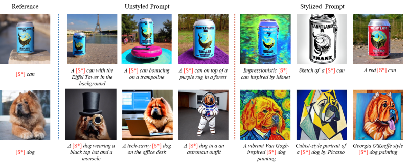
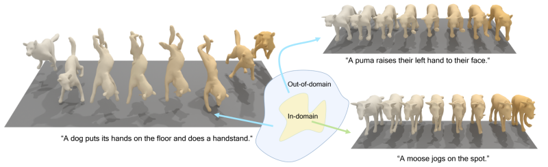

Overview
Our research focuses on advancing Image, Video, and 3D Content Generation through cutting-edge AI-Generated Content (AIGC) models, with a primary emphasis on diffusion models. These models have demonstrated remarkable potential in generating high-quality, realistic visual and 3D content. By leveraging the power of diffusion processes, we aim to create systems capable of synthesizing intricate, contextually coherent content across multiple modalities.
Our ultimate goal is to contribute to the development of a world model—a comprehensive, generative understanding of the environment and its dynamics. This involves not only producing visually stunning and realistic content but also ensuring that the generated outputs align with complex real-world structures and behaviors. Through our research, we seek to push the boundaries of content creation technologies, enabling new applications in entertainment, virtual reality, and digital interaction. By bridging generative capabilities with the broader vision of a world model, we aim to unlock unprecedented possibilities for creativity and innovation.
Equilibrated Diffusion: Frequency-aware Textual Embedding for Equilibrated Image Customization
Image customization involves learning the subject from provided concept images and generating it within textual contexts, typically yielding alterations of attributes such as style or background.

Video Generation for World Modeling
This repository contains inference-only code for our work, SIM, a cutting-edge approach for distilling pre-trained diffusion models into efficient one-step generators. Unlike traditional models that require multiple sampling steps, SIM achieves high-quality sample generation without needing training samples for distillation. It effectively computes gradients for various score-based divergences, resulting in impressive performance metrics: an FID of 2.06 for unconditional generation and 1.96 for class-conditional generation on the CIFAR10 dataset. Additionally, SIM has been applied to a state-of-the-art transformer-based diffusion model for text-to-image generation, achieving an aesthetic score of 6.42 and outperforming existing one-step generators.
OmniMotionGPT: Animal Motion Generation with Limited Data
Our paper aims to generate diverse and realistic animal motion sequences from textual descriptions, without a large-scale animal text-motion dataset. While the task of text-driven human motion synthesis is already extensively studied and benchmarked, it remains challenging to transfer this success to other skeleton structures with limited data. In this work, we design a model architecture that imitates Generative Pretraining Transformer (GPT), utilizing prior knowledge learned from human data to the animal domain. We jointly train motion autoencoders for both animal and human motions and at the same time optimize through the similarity scores among human motion encoding, animal motion encoding, and text CLIP embedding. Presenting the first solution to this problem, we are able to generate animal motions with high diversity and fidelity, quantitatively and qualitatively outperforming the results of training human motion generation baselines on animal data. Additionally, we introduce AnimalML3D, the first text-animal motion dataset with 1240 animation sequences spanning 36 different animal identities. We hope this dataset would mediate the data scarcity problem in text-driven animal motion generation, providing a new playground for the research community.
